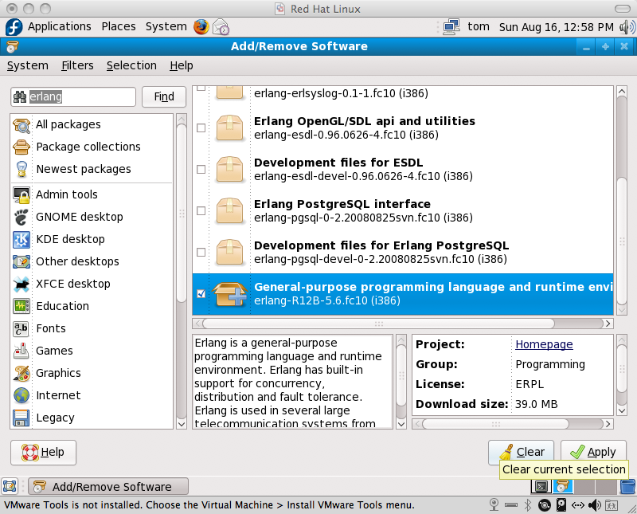

You will need to install a C++ compiler to build KERL.
You can install it as shown below.
You will need the Player headers and libraries to build KERL.
You can install Player as shown below.
Player/Stage built for fedora can be found
here.
Erlang is required to install and use KERL.
Check KERL out using subversion by running:
svn co http://kerl.svn.sourceforge.net/svnroot/kerl/tags/[version] kerl-[version]
After checking out KERL you can configure and build it by running:
# ./configure --prefix=/usr/ && make install
You may need to run updatedb so that erlang interface can be found.
You can then install KERL by running as root
# make install
You can now test a successful installation on KERL from any directory by running:
# erl
> mrh:start().